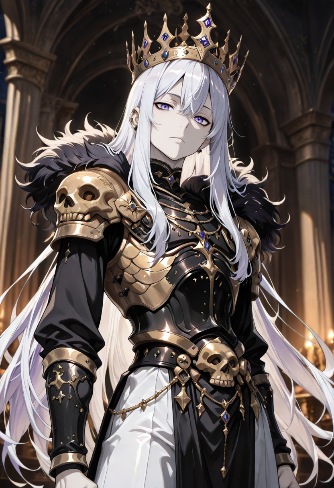

The Pain Is Only Information
The Priestess understands something the rest of the battlefield does not: that every wound is not a loss but a request for resources. In the Economy of Merit, the Linfa operate by the same principle as the Empire's broader society , nothing is wasted, everything can be redistributed, and grief without action is a luxury no one can afford.
Those who become Priestesses in life were often caretakers of unmanageable scope: healers during plagues, leaders during famines, counselors of the broken. Death did not stop the reflex. Malicott's sap simply gave them back the hands for it.
Their form is the most defined of the Shadows of the Sap branch , a barely visible skeleton suspended within a luminous viscous cloud that moves like thought rather than physics. They address wounds across the battlefield by pointing. They address death by not accepting it.
Tactical Data
Malicott's Blessing
BaseDescending Grace
ActiveSacred Aura
PassiveAwakening
UltimateGallery